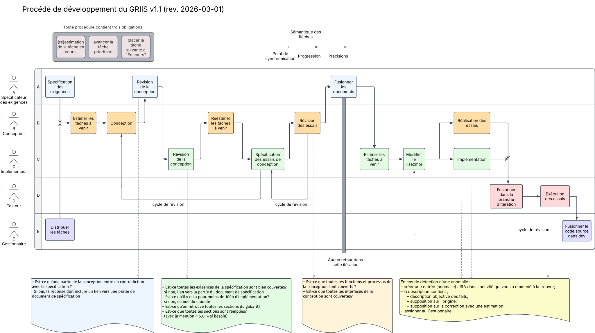

1. Points généraux
L’idée principale du développement est de décomposer un produit (p.ex. un service ou une application) en un ensemble de modules (de taille faible à modérée) et de développer ces modules dans des itérations séparées de façon incrémentale. Le travail est mis en priorité sur des exigences solides qui ancre la vision des systèmes produits par le GRIIS et dans un travail architectural qui assure que chaque développement pourra être effectué au niveau de qualité exigée par les besoins.
Ainsi, une application peu complexe et de faible taille sera développée en un seul module, tandis qu’un système complexe ou de grande taille sera décomposé en une série de bibliothèques ou de service distinct qui pourront communiquer ensemble.
Cette section expose les principes suivis durant une itération sur un module, que ce soit un module réalisant le système ou simplement une de ses bibliothèques.
1.1. Principes de l’approche du GRIIS
La philosophie utilisée pour le procédé de développement au GRIIS est celle d’une approche itérative basée sur le modèle en spirale (proposé initialement par Boehm). Notre modèle est une succession itérative de plusieurs cycles de développement utilisant le modèle classique en V. Cette approche impose plusieurs prérequis.
En premier lieu, le modèle est prédictif et séquentiel, ce qui implique que les exigences du module en production sont décidées et rédigées en amont, et revues à chaque itération en fonction des besoins et du risque encourus. Il est donc possible que les spécifications logicielles évoluent, mais elles peuvent simplement être sélectionnées dans le but de produire un prototype d’une étape (l’itération) qui permettent de valider la bonne poursuite du développement.
Deuxièmement, la gestion du risque est un élément primordial du procédé. Le « Mandataire du produit », le « Gestionnaire » et le « Spécificateur des exigences » (voir les Rôles des membres de l’équipe) évaluent l’impact de l’itération et des choix à chaque création d’un document des artefacts documentaires.
Troisièmement, le procédé est basé sur le modèle par incrément afin de contrôler la qualité du produit. La SCS ne doit pas présager une implémentation trop conséquente. La limite actuelle a été placée à un effort inférieur à 100 heures.personnes. Si la SCS produite implique un développement évalué comme trop important pour assurer la qualité du produit, elle est recommencée avec un découpage modulaire plus fin. L’implémentation de cet incrément doit rester de taille faible à modérée, en reportant la complexité dans des modules qui auront leurs propres itérations. Ceci garantit que l’itération n’est pas surchargée et que la qualité n’est pas remise en cause.
Le procédé s’appuie sur un binôme de professionnelles composant les rôles de « Concepteur » et « Implémenteur » des Rôles des membres de l’équipe (procédé s’apparentant au pair programming). Après la création de la spécification des exigences logicielles, ces deux membres s’occupent de prendre en charge tout le processus de mise en œuvre en alternant les rôles de production et de vérification, ce qui assure une meilleure cohérence et une meilleure qualité des documents (SCS et CXS). Ensuite, le binôme s’occupe de réaliser de façon parallèle l’implémentation et la réalisation des essais. Ceci permet de garantir qu’il n’y a pas de pollution du code source des essais par l’implémentation, ce qui assure une meilleure impartialité de la réalisation des essais. Finalement, les résultats sont évalués par un troisième membre (le rôle du « Testeur ») lors de l’exécution des essais, afin de garantir l’impartialité de la tâche.
De plus, le procédé prévoit des boucles de rétroaction ponctuelles. Pendant l’écriture des Artefacts documentaires, les retours sont possibles pour corriger des erreurs sur ceux-ci. Cependant, une fois complété, les Artefacts documentaires ne peuvent plus être modifiés sans redémarrer une nouvelle itération. La deuxième possibilité de rétroaction est celle survenant durant le processus de réalisation du produit.
Dans tous les cas, les itérations préservent les documents, le produit et les essais afin de pouvoir retrouver les éléments qui ont été générés dans le processus et, éventuellement, rejouer les essais de l’itération.
1.2. Qualité du procédé
La qualité du procédé réside en plusieurs points:
-
L’aspect prédictif et séquentiel qui impose de solides bases à chaque étape ;
-
L’analyse de risque à chaque étape ;
-
Le fonctionnement en binôme afin de limiter les erreurs de biais isolées par des relectures et des choix conjoints constants ;
-
La taille faible ou modérée visée par l’implémentation du module afin de limiter les risques.
1.3. Définitions
1.3.1. Artefacts documentaires
1.3.2. Rôles des membres de l’équipe
2. Étapes
2.1. Exigences (et analyse de risque)
Dans cette étape, le « Spécificateur des exigences » procède à l’ingénierie des exigences avec le « Mandataire du produit ».
Ceci produit la SRS.
L’écriture de la SRS peut être faite bien avant le début effectif de l’itération. Dans le Schéma du processus, l’étape indique la nécessité d’avoir les SRS et surtout le choix des éléments à utiliser pour l’itération après l’analyse de risque. Cette dernière est effectuée par le « Gestionnaire » conjointement avec le « Mandataire du produit ».
L’étape produit donc une SRS indiquant les exigences à traiter pour l’itération
2.2. Conception
Durant cette étape, le « Concepteur » procède à la rédaction de la SCS. Le « Concepteur » effectue le découpage architectural en processus pour un service, pour une bibliothèque de fonctions ou en modules qui donneront lieu à une itération propre d’une façon incrémentale avec un sous-ensemble des exigences de la SRS. Le « Concepteur » doit aussi raffiner les interfaces de la SRS qui ne sont pas assez précises.
La SCS n’est pas une conception détaillée, mais une conception de l’architecture du module visé.
Ceci produit la SCS. Celle-ci est immédiatement revue par le « Spécificateur des exigences » qui doit établir la non-contradiction de la SRS. Puis une autre revue est attribuée à l'« Implémenteur » dans le but de s’assurer que la SCS traite de chaque exigence de la SRS. Pendant cette revue, l'« Implémenteur » en profite pour étudier et comprendre la SCS qu’il devra implémenter.
Le processus de création et de revue doit être finalisé par un entête collégial entre les deux membres du binôme. Si un compromis est impossible sur un choix, une demande d’arbitrage par un autre membre de l’équipe du GRIIS (désigné par le « Gestionnaire » est effectuée pour trancher.
L’étape produit une SCS revue et approuvée par le binôme.
2.3. Spécification des essais
Durant cette étape, l'« Implémenteur » s’occupe de la rédaction de la CXS. L'« Implémenteur » construit des essais pour chaque fonction identifiée que la SCS prend en charge de la SRS.
Ceci produit la CXS. Celle-ci est immédiatement revue par le « Concepteur ». Le « Concepteur » doit s’assurer que la CXS a bien été comprise par les essais produits. Suite à cela, le « Concepteur » doit aussi s’assurer que la CXS atteint ces objectifs, c’est-à-dire la découverte de problème et leur diagnostic dans l’implémentation qui sera pris en charge par l'« Implémenteur ».
De façon analogue à la portée de la SCS, il est important de considérer que les essais reliés aux tests unitaires et d’intégration de l’implémentation ne sont pas pris en charge ici. Une contrainte impose notamment qu’une couverture du code soit effectuée dans des essais unitaires et d’intégration de l’implémentation qui seront effectué dans la tâche d’implémentation.
L’étape produit une CXS revue et approuvée par le binôme.
2.4. Implémentation
Durant cette étape, l'« Implémenteur » s’occupe de concevoir et d’implémenter le produit à partir de la SCS. L'« Implémenteur » expose aussi dans un fichier lisez-moi.adoc les informations pertinentes sur l’interface du module (et son utilisation) ainsi que sur la représentation des états du module décrit dans la SCS.
Les étapes précédentes devraient avoir garanti que l’implémentation est de taille faible ou modérée et qu’une auto-documentation via le code et un découpage conceptuel local (p.ex. paquetage en Java) est suffisant pour assurer la compréhension des choix de conceptions détaillées. Si l'« Implémenteur » estime que ce n’est pas le cas en cours d’étape, une nouvelle itération devrait être mise en place pour recommencer la SCS.
L’étape produit donc le code source, les essais unitaires et les essais d’intégrations de celui-ci.
2.5. Réalisation des essais
Durant cette étape, le « Concepteur » s’occupe de la réalisation des essais à partir de la CXS. Cette étape s’effectue de façon concurrente avec l’implémentation. Pour éviter que le « Concepteur » n’aie à parcourir l’implémentation (et possiblement introduire un biais dans sa réalisation des essais), un fichier exposant les informations dont il a besoin est écrit et maintenu par l'« Implémenteur » (fichier lisez-moi.adoc).
2.6. Exécution des essais
Durant cette étape, le « Testeur » doit vérifier l’implémentation en utilisant les essais de la conception. Le « Testeur » commence par fusionner le code produit aux deux précédentes étapes dans la branche de l’itération (pour préparer la préservation de l’itération). Le « Testeur » exécute les essais sur l’implémentation. Le « Testeur » relève toutes les anomalies en les consignant dans des billets JIRA.
Les anomalies soulevées sont étudiées par la suite par les membres de l’équipe impliquée pour déterminer leur nature. Si les anomalies se révèlent être des défauts de code lors de l’implémentation ou la réalisation des essais, le binôme corrige le problème directement. Si les anomalies se révèlent être des défauts de spécification (dans la SRS), de conception (dans la SCS) ou des essais (CXS), l’itération est brisée et une nouvelle est démarrée pour prendre en compte les points soulevés.
2.7. Postmortem
Durant cette étape, le « Gestionnaire » commence par fusionner la branche de l’itération dans la branche de développement du dépôt de code source (la branche dev).
Ensuite, les billets JIRA soulevés dans les étapes précédentes qui n’ont pas été traités et résolus sont étudiés pour déterminer les choix sur une prochaine itération avec le « Mandataire du produit ».
Appendix A: Cas particulier
Il arrive que, pour des raisons de formation ou de vérification de la qualité, le processus soit légèrement modifié. Ainsi, un membre sénior pourrait être responsable de la supervision d’un processus ou d’une autre personne peut rédiger un document à des fins de qualité sans s’occuper de la partie réalisation qui est normalement impartie à ce membre. Ce sont des cas exceptionnels qui impose plus de relecture et de temps d’études de la part des deux membres du binôme, mais ne nuit pas à la qualité du module produit.
Appendix B: Schéma du processus
